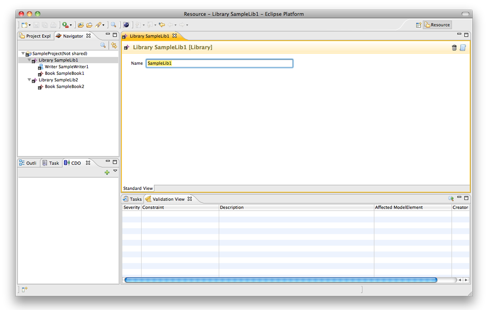
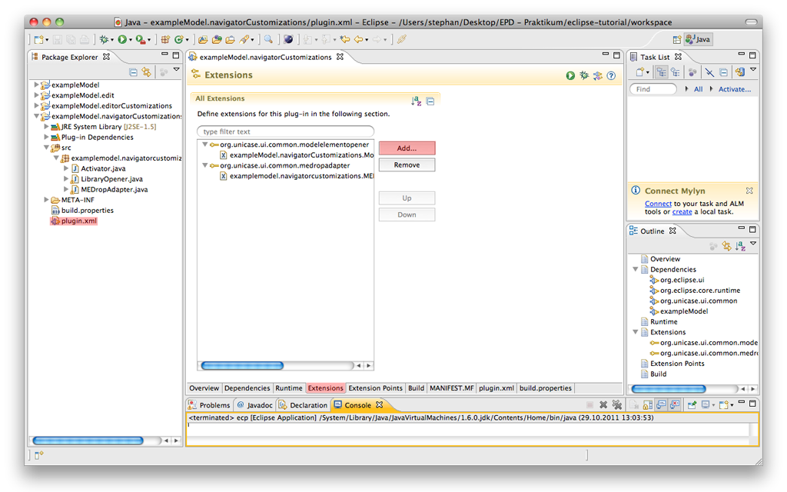
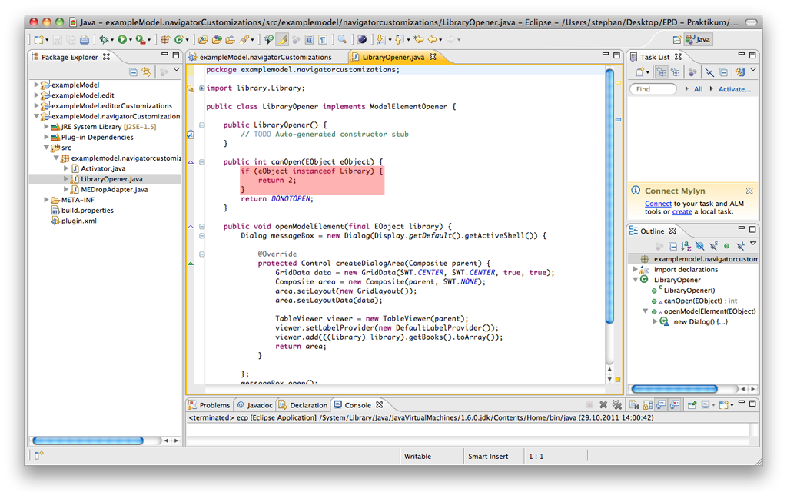
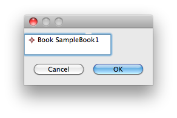
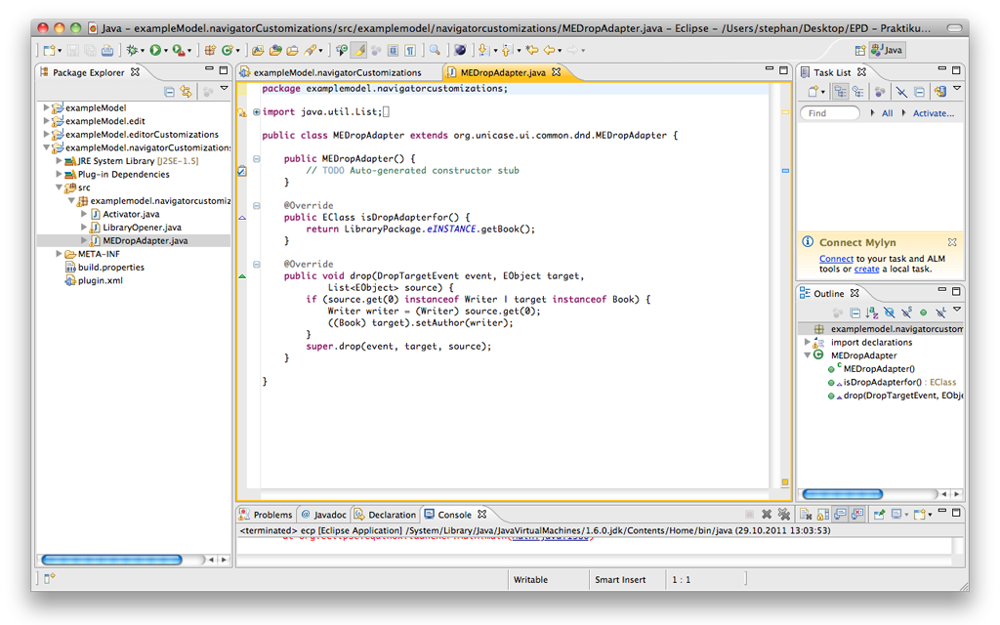

If you have setup your Eclipse developer environment as outlined in the previous tutorials, you have learned how to run and use a EMFCP instance and edit the Editor.
The following steps will explain how to customize the Navigator View in EMFCP. You can either change the opener that is used after double-clicking an element in the EMFCP or change the behaviour of the drag-and-drop functionality.
Step 1: Default behaviour of the EMFCP editorBased on the example model, the default opener for a model element of the type library in EMFCP will look as follows.

We will change the UI to open our own editor instead of the default one.
Step 2: Register another editorIn your Eclipse developer environment, open the plugin definition by double-clicking the file plugins.xml in exampleModel.navigatorCustomizations.

In this editor you change to the Extensions tab. Here you can add for example another Opener file for a specific object (registration on an object in the next step) or another drag-and-drop behaviour class.
Step 3: Changing the OpenerNow we have a look at the LibraryOpener.java file.
The function canOpen is responsible for the registration to a specific object. EMFCP uses a priority-based approach to decide which generator is getting opened on user action. Therefore we have to tell EMFCP that our opener should be used for Library objects. This is happening in the highlighted area in which we check if the EObject is an instance of a Library and return 2 as priority.

The method openModelElement is defining the customized editor. This simple example just displays a list of Book elements in the Library.

Step 4: Changing the drag-and-drop AdapterYou can also change the behaviour of the drag-and-drop feature. An example implementation of an adapter can be found in the MEDropAdapater.java class.
The main functionality is the same as in the editor example. One needs two different methods in which the isDropAdapterfor method is used to bind the adapter to one object type. The other method (drop) is called once an object is dropped on the specified object type.

You can handle the drag event depending on the source type as it is shown in the sample implementation in MEDropAdapter.java. In this example a Writer is automatically added to the Book once it is dropped on it.